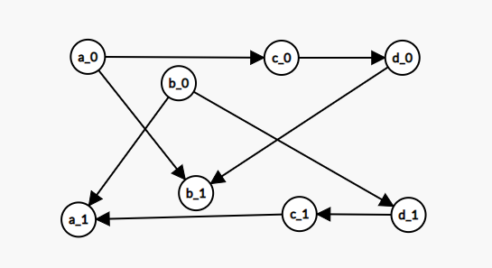
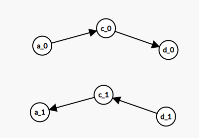

在计算机科学中，布尔可满足性问题（有时称为命题可满足性问题，缩写为SATISFIABILITY或SAT）是确定是否存在满足给定布尔公式的解释的问题。换句话说，它询问给定布尔公式的变量是否可以一致地用值TRUE或FALSE替换，公式计算结果为TRUE。如果是这种情况，公式称为可满足。另一方面，如果不存在这样的赋值，则对于所有可能的变量赋值，公式表示的函数为FALSE，并且公式不可满足。例如，公式“a AND NOT b”是可以满足的，因为可以找到值a = TRUE且b = FALSE，这使得（a AND NOT b）= TRUE。相反，“a AND NOT a”是不可满足的。——百度百科
在每个限制中牵扯到的最多的元素假设是\(k\)，我们就称为\(k-sat\)问题。可以证明当\(k \ge 3\)时为\(np\)完全问题。下面只讨论\(k=2\)的情况。
从一个最简单的\(2-sat\)问题开始今天的讨论
有n对夫妻被邀请参加一个聚会，因为场地的问题，每对夫妻中只有1人可以列席。在2n 个人中，某些人之间有着很大的矛盾（当然夫妻之间是没有矛盾的），有矛盾的2个人是不会同时出现在聚会上的。有没有可能会有n 个人同时列席？——hdu3062
对于每对夫妻，我们可以将丈夫去看作\(1\)，妻子去看作\(0\)。要求给每对夫妻确定一个值，使得满足这\(m\)个限制。
这就是最简单的\(2-sat\)模型。
先观察这些限制,假设A中的丈夫不能和B中的妻子一起去(？？？)。那么也就是说，A中的丈夫只能和B中的丈夫一起去。也就是说，如果A中的丈夫去，那么B中的丈夫也必须去。同理，如果B中的妻子去，那么A中的妻子也必须去。
我们就从A中的丈夫向B中的丈夫连一条边，从B中的妻子向A中的妻子连一条边，表示这些"必须"的条件。
显然我们就可以得到这样一个结论:如果一个点被选了，那么这个点所能到达的所有点也必须被选择。如果一个点没选，那么所有可以到达这个点的点都不能选。出现矛盾当且仅当某对夫妻的丈夫和妻子都必须去。
我们枚举每一个人选或者不选，然后去查看是否会出现矛盾。
如果一对夫妻中两个人不论选择谁都会出现矛盾。那么问题必定无解。
继续推一些结论。
对于同一个强连通分量里的点，如果选择其中一个，那么这个强连通分量中的点必须全部选择。这样我们可以先\(tarjan\)缩点。如果一对夫妻出现在了同一个强连通分量里面肯定无解。否则一定有解。
找可行解可以先拓扑排序一下，然后自底向上的顺序推导。
观察我们的构图方式可以发现构出来的图有对称性。
啥是对称性？？

如图。我们观察其中的一组点，比如\(c\)

发现可以到达\(c_0\)的点是\(a_0\),\(c_0\)可以到达的点是\(d_0\),而可以到达\(c_1\)的点是\(d_1\),\(c_1\)可以到达的点是\(a_1\)。刚好对称。也就是说我们只要保证\(c_0\)可以到达的不会矛盾，那么就可以保证可以到达\(c_1\)的点不会矛盾。我们如果选择了\(c_0\)，那么就一定选择\(d_0\)，这时把\(c_1\)和\(d_1\)都删去。按照这种思路，我们每次找到一个未确定的点\(x\)，使得\(x\)到达的点中没有\(x'\)(即x的对立点)。
这样我们一定可以找到一组解。而无解的情况也就是找不到这种点的时候。即一对点存在于同一个强连通分量中。
然后思考求解的过程，因为要使得“\(x\)到达的点中没有\(x'\)(即x的对立点)。”
所以可以拓扑排序。然后就自底向上的找答案。
有一种更加简单的找可行解的方法。
注意到\(Tarjan\)算法的本质是一次\(dfs\)，他在回溯时会优先取出有向图"底部"的\(scc\)进行标记。故\(Tarjan\)算法得到的\(scc\)编号本身就已经满足缩点后的有向无环图中"自底向上"的拓扑序。——《算法竞赛进阶指南》
得出结论：直接比较缩点之后编号的大小就可以得出答案，较小的为1，较大的为0。
我讲的不好？？
没关系，再看些资料吧。
https://blog.csdn.net/qq_24451605/article/details/47126143
由对称性解2-sat问题
/*
* @Author: wxyww
* @Date: 2019-04-28 18:50:21
* @Last Modified time: 2019-04-28 19:59:02
*/
#include<cstdio>
#include<iostream>
#include<cstdlib>
#include<cstring>
#include<algorithm>
#include<queue>
#include<vector>
#include<ctime>
using namespace std;
typedef long long ll;
const int N = 2010;
ll read() {
ll x=0,f=1;char c=getchar();
while(c<'0'||c>'9') {
if(c=='-') f=-1;
c=getchar();
}
while(c>='0'&&c<='9') {
x=x*10+c-'0';
c=getchar();
}
return x*f;
}
struct node{
int v,nxt;
}e[1000000];
int n,m,ejs,head[N];
void add(int u,int v) {
e[++ejs].v = v;e[ejs].nxt = head[u];head[u] = ejs;
}
int vis[N],tot,dfn[N],low[N],sta[N],coljs,top,col[N];
void tarjan(int u) {
dfn[u] = low[u] = ++tot;
sta[++top] = u;vis[u] = 1;
for(int i = head[u];i;i = e[i].nxt) {
int v = e[i].v;
if(!dfn[v]) {
tarjan(v);
low[u] = min(low[u],low[v]);
}
else if(vis[v]) low[u] = min(low[u],low[v]);
}
if(low[u] == dfn[u]) {
++coljs;
do {
int x = sta[top--];
col[x] = coljs;
vis[x] = 0;
}while(sta[top + 1] != u);
}
}
int main() {
while(~scanf("%d%d",&n,&m)) {
memset(head,0,sizeof(head));
ejs = 0;
coljs = 0;
memset(dfn,0,sizeof(dfn));memset(low,0,sizeof(low));
tot = 0;top = 0;
for(int i = 1;i <= m;++i) {
int x = read() + 1,y = read() + 1;
int c1 = read(),c2 = read();
if(c1) {
if(c2) add(x + n, y),add(y + n,x);
else add(x + n,y + n),add(y,x);
}
else {
if(c2) add(x, y),add(y + n,x + n);
else add(x,y + n),add(y,x + n);
}
}
for(int i = 1;i <= n + n;++i) if(!dfn[i]) tarjan(i);
int bz = 0;
for(int i = 1;i <= n;++i) {
if(col[i] == col[i + n]) {
bz = 1;break;
}
}
puts(bz ? "NO" : "YES");
}
return 0;
}